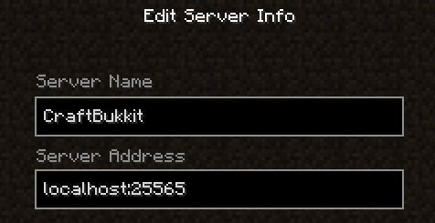
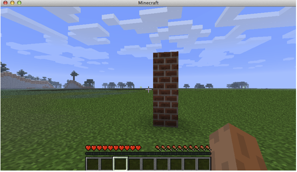

The Pi Edition of Minecraft includes a simple wire protocol API with bindings in Python. (Bindings in other languages are also available, for example here is one for Ruby. The language-specific APIs are just wrappers around some string commands that are transmitted to the Minecraft server via TCP/IP. The Minecraft installation includes a description of the full syntax.)
If you don't have a Raspberry Pi, then you can't currently use the official Minecraft API. (The desktop versions of the game don't support it.) This post describes how to get started with CraftBukkit (an open-source replacement for the Minecraft server) and Raspberry Juice (a CraftBukkit plugin that emulates the Minecraft API support) so that you can run Minecraft API programs using your desktop environment.
These instructions were developed on a Mac, but they should be easily adaptable to other environments.
There are good instructions for downloading and installing CraftBukkit at http://wiki.bukkit.org/Setting_up_a_server.
I am running the most recent version of Minecraft (currently v1.5.1) so the most recent "recommended" version of CraftBukkit is not yet compatible. Therefore I looked at the download page and selected the most recent "Beta Build" version for v1.5.1 (currently v1.5.1-RO2) and put this into my BukketServer folder. I then modified my start.command file (as described in the instructions above) to load this version instead of the default version by writing:
java -Xms1024M -Xmx1024M -jar craftbukkit-1.5.1-R0.2.jar -o true
With my start.command file set up, I can then start the server by using a terminal window and typing:
cd ~/Desktop/BukkitServer ./start-server
The server runs as a console program within the terminal window. To stop the server, I type
stop
For a list of other available commands, you can type
help
(The commands can also be used via Minecraft chat, but since I'm already switching around to my code window and keeping an eye on the terminal while coding, it's just as easy to use this console directly.)
When you start Minecraft, select "Multiplayer" mode, and then define a server with the following properties:
When you then click the "Join Server" button, you will see a connection message in your CraftBukkit console window:
11:45:41 [INFO] TestUser[/127.0.0.1:58901] logged in with entity id 150 at ([world] -236.2425485963545, 67.0, 232.225211454399)
Once you have a working server and can connect to it, you are ready to add the Raspberry Juice plugin that implements the Minecraft API.
Announcements about this plugin can be found here and the source code is on GitHub.
To install it, find the download link at the main plugin page, http://dev.bukkit.org/server-mods/raspberryjuice/. This will download a JAR file (currently raspberryjuice-1.2.jar). Copy this JAR file into the folder called plugins under your main CraftBukkit folder.
Now when you restart your server, you should see a message like this and you are good to go:
1:44:02 [INFO] [RaspberryJuice] Enabling RaspberryJuice v1.2
If your main goal is to experiment with script programming, then you may not want to deal with monsters, night-time, etc. (This is how the Pi edition works... it runs only in creative mode.)
To make your server default to monster-free, creative mode play, locate the file server.properties in your main CraftBukkit folder and set the following values:
gamemode=3D1 spawn-monsters=3Dfalse spawn-animals=3Dfalse difficulty=3D0 allow-flight=3Dtrue
(Note: the allow-flight setting is important. If you don't enable it, and then you run a script that erases the ground beneath you, the server will kick you out for "illegally" flying!)
To get rid of day/night transitions, install the Always Day plugin (copy the JAR file to your plugins folder). Then just type the command "day" in your server's console window.
When you download Minecraft: Pi Edition, you will get a file called minecraft-pi-0.1.1.tar.gz. Extract this file, and you will get a folder called mcpi Within this is a subfolder called mcpi/api/python/mcpi. This is the python API, and you can copy it around freely to your development folder.
Note that the neighboring folder, mcpi/api/python/spec, contains the description of the wire format used to send API commands to the server.
First, create a development folder for yourself, for example you could call it mcdev:
mkdir mcdev
Now copy your downloaded API into this folder:
cd mcdev cp -r ~/Downloads/mcpi/api/python/mcpi .
Within this folder, create a file called test1.py with the following contents:
# Sample program to create a pillar
import mcpi.minecraft as minecraft
import mcpi.block as block
# Connect to the Minecraft server
world = minecraft.Minecraft.create()
# Get the player's current position and store the coordinates
[x,y,z] = world.player.getPos()
# Set some variables to customize your pillar
height = 3
material = block.BRICK_BLOCK
# Build the pillar. It will be "height" blocks high and located one
step away from the player.
for level in range(0, height):
world.setBlock(x+1, y+level, z+1, material)
level = level + 1;
(NOTE: if you're not a Python programmer [yet!] then be aware that the indentation in the last two lines is important. These two lines must each be indented at the beginning with a tab (or 2 spaces) exactly as shown. Unlike many other languages, Python pays attention to whitespace.)
Finally, execute your program by typing the following at the command line from within your mcdev folder.
python test1.py
When you return to the game, your character will be standing next to a small brick pillar!
